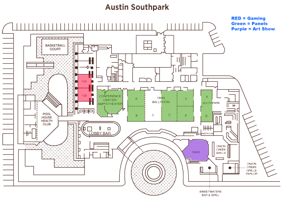

We will convene at the Omni Southpark Hotel, which is near the airport on the south side of Austin. Click the link below to reserve a room using the convention rate. If you reserve by phone, you should be able to tell them it is for ArmadilloCon and get the con rate. The cutoff date for getting ArmadilloCon room rate is Thursday, July 9. After the cutoff, the rooms will sell fast, so don't delay.
Reservations can be made online at Omni Austin at Southpark.
The hotel is ADA compliant. Here is the layout color-coded with the areas we will be using. If you are wondering whether or not you should bring a chair to help you around, you might consider it or at least a walker. There are a number of places to sit and rest throughout the entire lobby.
